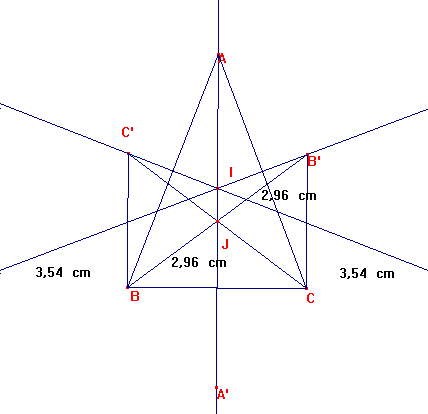

Problema de investigación
Propuesto por François Rideau, Maitre de Conférences à l'Université de Paris 7
Problema 311.
a) Reflejemos el incentro I sobre cada uno de los lados de un triángulo isósceles,llamando A' (opuesto de A), etc..
Dibujemos las líneas AA', BB', CC'.
Mostrar que:
1.- Estas tres líneas son concurrentes (en un punto J)
2.- El segmento IJ es paralelo a la recta de Euler.
b)Reflejemos el incentro I sobre cada uno de los lados de un triángulo equilátero, llamando A' (opuesto de A), etc..
Dibujemos las líneas AA', BB', CC'.
Mostrar que:
1.- Estas tres líneas son concurrentes (en un punto J)
2.- El segmento IJ es paralelo a la recta de Euler.
Gray, S. (2.001): Math Forum.
El problema 39 de este Laboratorio
Solución del director.
a) Reflejemos el incentro I sobre cada uno de los lados de un triángulo isósceles,llamando A' (opuesto de A), etc..
Dibujemos las líneas AA', BB', CC'.
Mostrar que:
1.- Estas tres líneas son concurrentes (en un punto J)
2.- El segmento IJ es paralelo a la recta de Euler.
1.-

Sea J el punto de corte de los segmentosBB' y CC'.
Por la simetría de la figura, JBC' y JCB' son triángulos congruentes, luego BJ=JB'=CJ=JC'.
Luego J está en la mediatriz de BC, y por tanto en AA', cqd.
2.- No solo es paralelo IJ a la recta de Euler, sino que en este caso del isósceles coincide con ella, ya que es la mediatriz de BC.
b) Caso del equilátero.
I=J.
La recta de Euler degenera en un punto.
Ricardo Barroso Campos
Didáctica de las Matemáticas
Universidad de Sevilla.
.